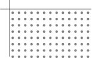
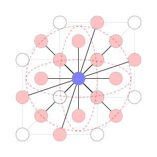
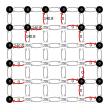
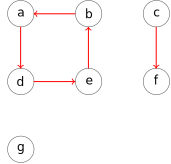
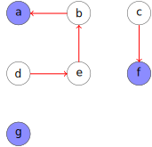

Interactive 3D Segmentation Repair with Image-Foresting Transform, Supervoxels and Seed Robustness
Anderson Tavares
Instituto de Matemática e Estatística
Universidade de São Paulo
Junho de 2017


Corrigir Segmentação Automática
Continuar Segmentação Interativa
Editar Segmentação
Problema reverso
Usuários Robôs
Spina et al. 2016

Superfícies Paramêtricas
Jackowski et al. 2003
Valenzuela et al. 2015

Imagem Digital
Grafo
Adjacência

Imagem como Grafo
Segmentação Corte Família Energia Sementes

Caminho
Mapa de Predecessores
Floresta Geradora
Componentes
Tarjan